Activity Diagrams and the UP
- They provide a general-purpose mechanism fro modeling behaviors and can be used whenever they add value
- They let you model a process without having to specify the static structure of classes and objects that realize process
- Activity diagrams can be used in many UP workflows.
- Recommended
- In the analysis of workflow
- to model the flow in use case that is easy for stakeholders to understand
- to model a flow between use cases (interaction overview diagram)
- In design
- to model the details of an operation
- to model the details of an algorithm
- In business modeling
- to model a business process
- In the analysis of workflow
Activities
Activities are networks of nodes connected by edges. There are three categories of node:
- action node - represent discrete units of work that are atomic within the activity
- control nodes - control the flow thorough activity
- object nodes - represent objects used in the activity
Edges represent flow through the activity. There are two categories of edge:
- control flow - represent flow of control through activity
- object flow - represent the flow of objects though the activity
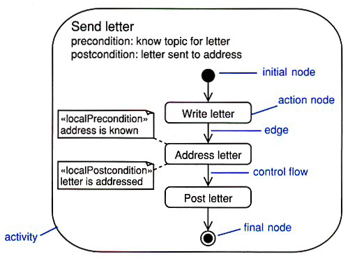
A use case as a series of actions
- Use case expresses system behavior as an interaction between an actor and the system.
- Activity diagram expresses it as a series of actions graphically.
- They are complementary views of the same behavior
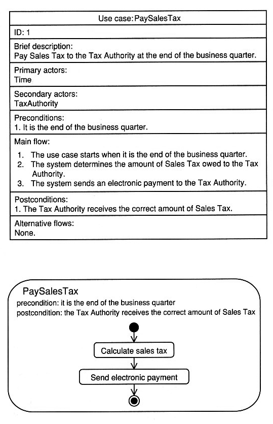
Activity Semantics
Activity diagrams are based on Petri Nets (http://www.informatik.uni-hamburg.de/TGI/PetriNets/).
Activity diagrams model behavior by using the token game. This game describes the flow of token around the network of nodes and edges according to specific rules. Tokens in UML activity diagrams can represent
- the flow of control
- an object
- some data
The state of the system at any point in time is determined by the disposition of its tokens.
In the Send letter example, the token is the flow of control as there are no objects or data being passed between nodes in this particular case.
- Tokens are moved from a source node to a target node across an edge.
- Movement of a tokens is subject to conditions, and it can only occur when all of the conditions are satisfied.
- In the Send letter example for action nodes consider:
- the post conditions of the source node
- guard condition on the edge
- the precondition of the target node.
- As well as action nodes there are control nodes and object nodes with own semantics. Control nodes for example have special semantics that control flow tokens are passed from the input edges to output edges.
Activity Partitions
- Each activity partition represents a high-level grouping of related actions.
- To make your activity easier to read, use vertical, horizontal, or curved lines to divide the activity into partitions.
- Activity partitions are sometimes called swimlanes.
- Partitions are not part of your system, always use your judgment and apply activity partitions only when they add real value to the model.
- Activity partitions are commonly used to represent
- use cases
- classes
- components
- organizational units (in business modeling)
- roles (in workflow modeling)
- distribution of processed across hosts (distributed systems)
Each set of partitions should have a single dimension that describes the basic semantics of the set (tree structure below).
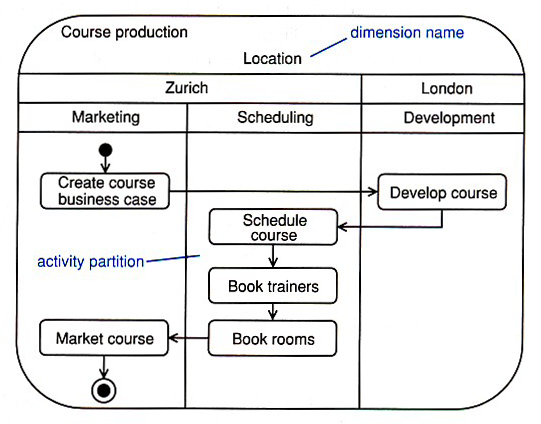
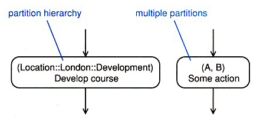
Action Nodes
Action nodes execute when
- there is a token simultaneously on each of their input edges AND
- the input tokens satisfy all of the action node local preconditions
When the action node has finished execution
- the local postcondition is checked
- if it is satisfied, the node simultaneously offers control tokens on all of its output edges
- this is an explicit fork as one action node may give rise to many flows
- unlike conventional flowcharts, activity diagrams are inherently concurrent
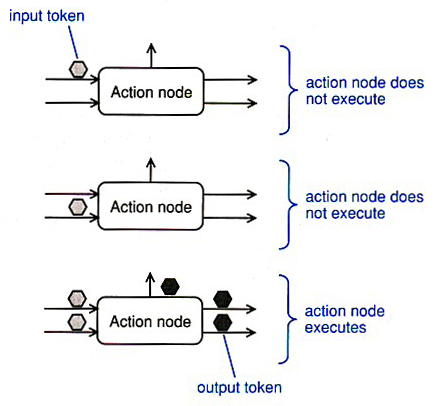
Four Types of Action Nodes
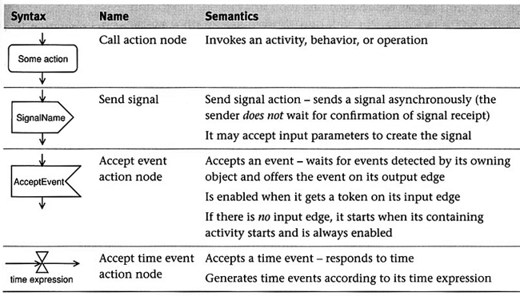
Call Action Node
The most common type of action node is the call action node. This type of node can invoke
- and activity
- a behavior
- an operation
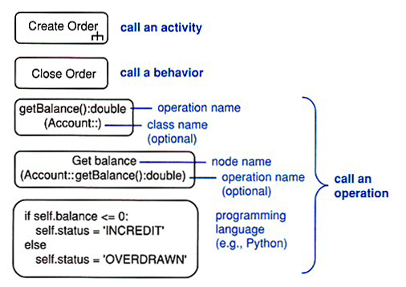
UML operation (operation signature):
visibility name( direction parameterName: parameterType = defaultValue, ... ) :
returnType
Accept Time Event Action Node
- An accept time event action node responds to time.
- This type of node has time expression, and it generates a time event
when the expression becomes true;
eg., end of business year, on 01/15/2008, wait 10 seconds
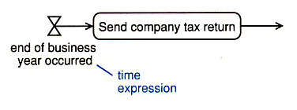
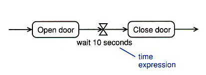
Control Nodes
Control nodes manage the flow of control within an activity

Decision and Merge Nodes
- A decision node has one input and two or more alternate outputs edges.
- A token arrived at the input edge will be offered to all the output edges but will traverse at most one of them.
- The decision node acts like a crossroads in the flow where the token must take one direction only.
- Each of the output edges is protected by a guard condition such that the edge will accept a token if, and only if, the guard condition evaluates to true.
- Guard conditions have to be mutually exclusive, otherwise the node is undefined.
- Merge nodes have two or more input edges and a single output node.
- They merge all their incoming flows into a single outgoing flow.
- All tokens offered on the incoming edges are offered on the outgoing edge and there is no modification of the flow or the tokens.
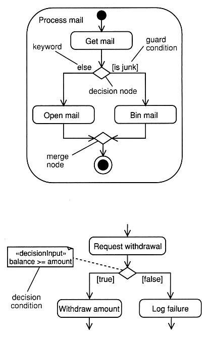
A note stereotyped <<decisionInput>> provides a decision condition for a decision node.
Fork and Join Nodes - Concurrency
- A fork node splits a flow into multiple concurrent flows.
- Tokens arriving at the incoming edges are duplicated and offered on all of the outgoing edges stimulatingly.
- This splits the single incoming flow into multiple parallel outgoing flows.
- Each outgoing edge may have a guard condition and a token can only traverse the outgoing edge if the guard condition is true.
- A join node synchronizes and joins multiple input flows into a single output flow.
- They synchronize flows by offering a token on their single output edge when there is a token on all of there input edges.
- They perform a logical AND on their input edges.
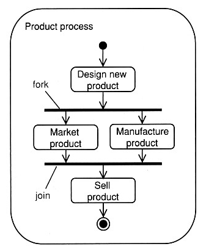
Object Nodes
- Object nodes indicate that instances of classifier are available at specific point of activity.
- The input and output edges of object nodes are object flows.
- Object flows represent the movement of objects around the activity.
- The objects themselves are created and consumed by action nodes.
- When an object node receives an object token on one of its input edges, it offers this token on all of its output edges simultaneously and the output edges compete for the token.
- It is still one token - the token is not replicated on the output edges. The first edge to accept the token gets it.
- Object nodes act as buffers. An upper bound that indicates
the maximum number of tokens can be defined along with ordering
{upperBound = 12} {ordering = LIFO}.
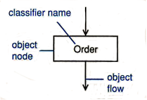
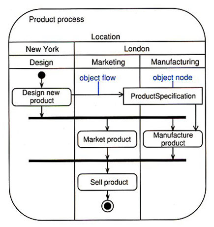
Activity Parameters
- Activity parameters are object nodes input to or from an activity.
- The input and output nodes should be drawn overlapping the activity frame.
- Object nodes can represent objects in a particular state: [Paid].
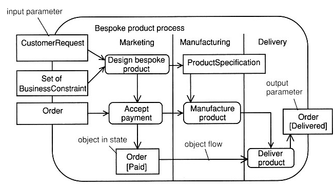
Pins
- A pin is an object node that represents one input to or output from an action.
- You can use pins to clean up things a bit!
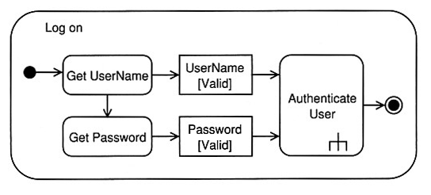
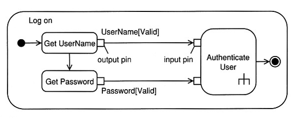